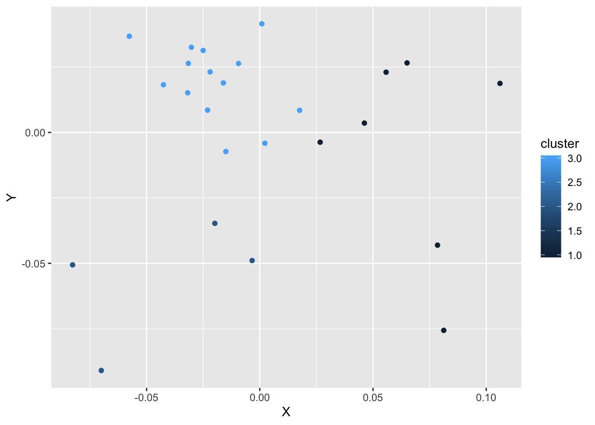

Semantic_Librarian_Tutorial.Rmdlibrary(RsemanticLibrarian)This tutorial describes how to use the Semantic Librarian functions. Presntly, this package uses a corpus of abstracts from the APA database. A small sample of the required data files are automatically loaded with the package. These include:
article_df a data frame containing abstract information (100 abstracts)article_vectors a matrix containing the semantic vectors for each article. Each row contains the vector for each abstract. The rows for each abstract correspond to the row entries in article_df
author_list a vector containing the first 100 author namesdictionary_words a vector containing 100 words, much smaller than actual dictionaryWordVectors a matrix containing the semantic vectors for each word in dictionary_words.AuthorVectors a matrix of semantic vectors for each authorThe entire data set can be downloaded from the github repository for the R Shiny Semantic Libararian app https://github.com/CrumpLab/SemanticLibrarian
Create some search terms:
The get_search_terms() function converts the words in the search string to lower case, removes special characters, and finds the words in the search string that are in the dictionary. Search terms must be in the dictionary, in order to use existing semantic vectors for searching the data base.
search <- get_search_terms(search,dictionary_words)The get-search-article_similarities() function returns the cosine similarity between the search terms and all of the abstracts in the data set. query_type can be set to 1 for compound search, 2 for AND search, and 3 for OR search.
article_sims <- get_search_article_similarities(search_terms = search,
d_words = dictionary_words,
w_vectors = WordVectors,
a_vectors = article_vectors,
a_df = article_df,
query_type = 1)
knitr::kable(head(article_sims), format="html", escape=FALSE)| formatted_column | title | wrap_title | year | index | Similarity |
|---|---|---|---|---|---|
Foreword By The President.Bernhardt, Karl S. Canadian Journal Of Experimental Psychology, 1,1-2 Presents an introduction to this first issue of the Canadian Journal of Psychology. With the publication of this journal, another important milestone in the advance of psychological studies in Canada has been passed. For six years the Canadian Psychological Association has published a Bulletin. This is now replaced by a quarterly journal, which will provide a much more adequate medium for the publication in Canada of scholarly and scientific works. The change, therefore, is far more than one of name. The new journal begins with a modest issue of forty-eight pages, but with every prospect of expansion in the near future, if the members of the Association give it wholehearted co-operation. |
Foreword By The President. | Foreword By The President. | 1947 | 1 | 0.7885358 |
The Teaching Of Psychology In Canadian Universities.Liddy, R. B. Canadian Journal Of Experimental Psychology, 3,104-111 This constitutes the report of the Standing Committee on the Teaching of Psychology. The report is based on a survey of institutions (15 in number) other than Roman Catholic. The make up of the departments of psychology at these institutions, undergraduate registration, number of instructors, sorts of courses, and similar data are presented. The need for reducing overlap between courses in psychology bearing different names is stressed. |
The Teaching Of Psychology In Canadian Universities. |
The Teaching Of Psychology In Canadian Universities. |
1948 | 62 | 0.7787151 |
Professor Chester E. Kellogg.Nolast, Nofirst Canadian Journal Of Experimental Psychology, 3,136-136 Chester E. Kellogg, Professor and former Chairman of the Department of Psychology, McGill University, died at his home in St. Lambert, Quebec, on July 2nd, 1948. To the members of the Canadian Psychological Association, Dr. Kellogg is, perhaps, best known as Honorary President of the Canadian Psychological Association for the year 1946-47. His publications dealt with education, test construction-particularly with tests suitable for the examination of illiterates,-and statistical methodology. His contribution to Canadian psychology, in his personal contacts and stimulus to others, went far beyond the concrete evidence of the written word. |
Professor Chester E. Kellogg. | Professor Chester E. Kellogg. | 1948 | 67 | 0.7755395 |
Research Planning In The Canadian Psychological Association. I. Report On Experimental, Physiological, And Comparative Psychology.Hebb, D. O. Canadian Journal Of Experimental Psychology, 1,13-14 Important theoretical advances seem to be imminent, stemming from the physiological and anatomical work of such men as Lorente de Nó, Dusser de Barenne, and McCulloch, and from such more strictly psychological formulations as those of Hull. It is urged that Canadian psychologists take a more active part in these developments. |
Research Planning In The Canadian Psychological Association. I. Report On Experimental, Physiological, And Comparative Psychology. |
Research Planning In The Canadian Psychological Association. I. Report On Experimental, Physiological, And Comparative Psychology. |
1948 | 40 | 0.7740624 |
Maritime Psychological Association.Nolast, Nofirst Canadian Journal Of Experimental Psychology, 4,227-227 For some time there has been felt a need for some organization which would bring Maritime psychologists together. In April, 1948, a meeting of interested persons was held at King’s College, Halifax, and preliminary discussions on the nature of the organization and its constitution took place. Later, in May, another meeting of a similar nature was held at the University of New Brunswick. On October 9, a final meeting was held in Moncton with an attendance of some twenty persons representing various fields of psychological interest, and the preliminary work came to fruition in the formation of the Maritime Psychological Association. The purpose of the association is the “furtherance of psychology as a science, as a profession, and as a means of promoting human welfare.” |
Maritime Psychological Association. | Maritime Psychological Association. | 1948 | 82 | 0.7722047 |
Canadian Psychology—Past, Present And Future.Bernhardt, Karl S. Canadian Journal Of Experimental Psychology, 2,49-60 In this presidential address to the Canadian Psychological Association, Bernhardt first reviews the past and the present status of the group. He then suggests an outline for future development. The first principle is that research and application must proceed together—that psychology must have the goal of human happiness and efficient living. This program can be furthered by the development of interlaboratory and even international cooperation in research. At the same time, the results of research must be broadcast to a wider public. Three dangers are stressed: premature application, the development of an esoteric and empty vocabulary, and an overemphasis on clinical practice as opposed to work with normal people. |
Canadian Psychology—Past, Present And Future. | Canadian Psychology—Past, Present And Future. | 1947 | 11 | 0.7694384 |
The get_mds_article_fits() returns the most similar articles, up to the number specified by num_articles. This function also conducts mult-dimensional scaling, to produce a 2-d renderable semantic space, with article positions in the space as x, y coordinates. Finally, the num_clusters argument conducts k-means cluster analysis. The resulting data frame can be used for plotting, or to produce a table of the top articles.
MDS <- get_mds_article_fits(num_articles = 25,
num_clusters = 3,
year_range = c(1900,2000),
input_df = article_sims,
a_vectors=article_vectors
)Here is a simple plot of the abstract space using ggplot.
library(ggplot2)
ggplot(MDS, aes(x=X,y=Y,color = cluster))+
geom_point()
Alternatively, plotly could be used to generate a plot. Here, hovering over the point displays the title of abstract.
library(plotly)
ggp <- ggplot(MDS, aes(x= X, y= Y,
color=as.factor(cluster),
text=wrap_title))+
geom_hline(yintercept=0, color="grey")+
geom_vline(xintercept=0, color="grey")+
geom_point(aes(size=Similarity), alpha=.75)+
theme_void()+
theme(legend.position = "none")
ax <- list(
title = "",
zeroline = TRUE,
showline = FALSE,
showticklabels = FALSE,
showgrid = FALSE
)
p <- ggplotly(ggp, tooltip="text",
source = "article_SS_plot",
hoverinfo="text") %>%
layout(xaxis = ax, yaxis = ax,showlegend = FALSE) %>%
#style(hoverinfo = 'title') %>%
config(displayModeBar = F) %>%
layout(xaxis=list(fixedrange=TRUE)) %>%
layout(yaxis=list(fixedrange=TRUE))
p$elementId <- NULL
pThe get_article_article_similarities() function compares an existing abstract to all other abstracts in the data set, and returns a new data frame containing all of the abstracts with a column for Similarity between the target article and all other articles.
an_article <- article_df[1,]$title
print(as.character(an_article))
#> [1] "Foreword By The President."
sims <- get_article_article_similarities(an_article, article_vectors, article_df)
# look at top 10
knitr::kable(head(sims), format="html", escape=FALSE)| formatted_column | title | wrap_title | year | index | Similarity |
|---|---|---|---|---|---|
Foreword By The President.Bernhardt, Karl S. Canadian Journal Of Experimental Psychology, 1,1-2 Presents an introduction to this first issue of the Canadian Journal of Psychology. With the publication of this journal, another important milestone in the advance of psychological studies in Canada has been passed. For six years the Canadian Psychological Association has published a Bulletin. This is now replaced by a quarterly journal, which will provide a much more adequate medium for the publication in Canada of scholarly and scientific works. The change, therefore, is far more than one of name. The new journal begins with a modest issue of forty-eight pages, but with every prospect of expansion in the near future, if the members of the Association give it wholehearted co-operation. |
Foreword By The President. | Foreword By The President. | 1947 | 1 | 1.0000 |
Canadian Psychology—Past, Present And Future.Bernhardt, Karl S. Canadian Journal Of Experimental Psychology, 2,49-60 In this presidential address to the Canadian Psychological Association, Bernhardt first reviews the past and the present status of the group. He then suggests an outline for future development. The first principle is that research and application must proceed together—that psychology must have the goal of human happiness and efficient living. This program can be furthered by the development of interlaboratory and even international cooperation in research. At the same time, the results of research must be broadcast to a wider public. Three dangers are stressed: premature application, the development of an esoteric and empty vocabulary, and an overemphasis on clinical practice as opposed to work with normal people. |
Canadian Psychology—Past, Present And Future. | Canadian Psychology—Past, Present And Future. | 1947 | 11 | 0.9202 |
Professor Chester E. Kellogg.Nolast, Nofirst Canadian Journal Of Experimental Psychology, 3,136-136 Chester E. Kellogg, Professor and former Chairman of the Department of Psychology, McGill University, died at his home in St. Lambert, Quebec, on July 2nd, 1948. To the members of the Canadian Psychological Association, Dr. Kellogg is, perhaps, best known as Honorary President of the Canadian Psychological Association for the year 1946-47. His publications dealt with education, test construction-particularly with tests suitable for the examination of illiterates,-and statistical methodology. His contribution to Canadian psychology, in his personal contacts and stimulus to others, went far beyond the concrete evidence of the written word. |
Professor Chester E. Kellogg. | Professor Chester E. Kellogg. | 1948 | 67 | 0.9187 |
The First Course In Psychology In Canadian Universities.Liddy, R. B.; Neal, Leola E. Canadian Journal Of Experimental Psychology, 2,61-66 A summary is presented of questionnaires completed by 25 colleges and universities, regarding the introductory course in psychology. It appears that in general a relatively small amount of time is devoted to class discussion, demonstration, and experiment, and that reasonably satisfactory results can be achieved with large classes (960 is the largest reported). The objectives of the course are classified under 4 headings: to understand what psychology is, to develop a sound point of view toward the study of human affairs, to lay the basis for advanced study, and to show the pertinence of valid psychological knowledge to everyday practical affairs. When this line of questioning was extended to 435 students at the University of Western Ontario, 48% checked as the most important aim the improvement of social and personal adjustments, with 27% more voting for the development of habits of critical thinking about everyday psychological problems. |
The First Course In Psychology In Canadian Universities. |
The First Course In Psychology In Canadian Universities. |
1947 | 12 | 0.9137 |
Research Planning In The Canadian Psychological Association. I. Report On Experimental, Physiological, And Comparative Psychology.Hebb, D. O. Canadian Journal Of Experimental Psychology, 1,13-14 Important theoretical advances seem to be imminent, stemming from the physiological and anatomical work of such men as Lorente de Nó, Dusser de Barenne, and McCulloch, and from such more strictly psychological formulations as those of Hull. It is urged that Canadian psychologists take a more active part in these developments. |
Research Planning In The Canadian Psychological Association. I. Report On Experimental, Physiological, And Comparative Psychology. |
Research Planning In The Canadian Psychological Association. I. Report On Experimental, Physiological, And Comparative Psychology. |
1948 | 40 | 0.9107 |
National Research Council Associate Committee On Applied Psychology.Ault, O. E. Canadian Journal Of Experimental Psychology, 4,187-190 At the meeting of the National Research Council, March 19, 1948, it was decided to appoint an Associate Committee on Applied Psychology for the purpose of fostering fundamental psychological research and its application to problems of national importance in Canada. This marks the culmination of a series of steps through which the Canadian Psychological Association has collaborated with federal authorities since its formation in 1938. The history of this action is briefly reviewed. Other information provided includes the Committee members, as well as a list of special interest areas for research grants. |
National Research Council Associate Committee On Applied Psychology. |
National Research Council Associate Committee On Applied Psychology. |
1948 | 75 | 0.9105 |